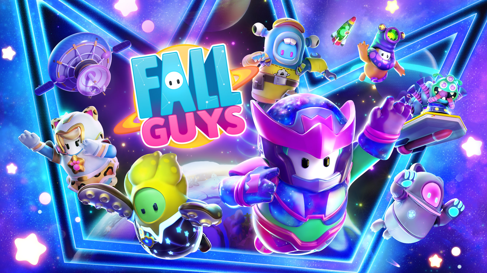

League of Legends
Legends of Runeterra
Teamfight Tactics
Twitch
Valorant
Aplicativos populares
Notion
Notion é uma aplicação que fornece componentes tais como notas, bases de dados, quadros, wikis, calendários e lembretes. Os usuários podem ligar estes componentes para criar os seus próprios sistemas de gerenciamento do conhecimento, tomada de notas, gerenciamento de dados, gerenciamento de projetos, entre outros.

WhatsApp é um aplicativo multiplataforma de mensagens instantâneas e chamadas de voz para smartphones. Além de mensagens de texto, os usuários podem enviar imagens, vídeos e documentos em PDF, além de fazer ligações grátis por meio de uma conexão com a internet.

Telegram
O Telegram é um serviço de mensagens instantâneas baseado na nuvem. O Telegram está disponível para smartphones ou tablets, computadores e também como Aplicação web. Os usuários podem enviar mensagens e trocar fotos, vídeos, stickers e arquivos de qualquer tipo.

O Instagram é uma rede social online de compartilhamento de fotos e vídeos entre seus usuários, que permite aplicar filtros digitais e compartilhá-los em uma variedade de serviços de redes sociais, como Facebook, Twitter, Tumblr e Flickr.
Teams
Skype é um software que permite comunicação pela Internet através de conexões de voz e vídeo, criado por Janus Friis e Niklas Zennstrom. O Skype foi lançado no ano de 2003. Em 2005 foi vendido para a empresa eBay e pertence, desde maio de 2011, à Microsoft.
Jogos populares

Fall Guys
Fall Guys é um jogo party royale gratuito, multiplataforma e multijogador, no qual você e os outros competidores disputam em rodadas com caos absurdo e crescente em pistas de obstáculos até restar um vencedor sortudo!

Among Us
Among Us é um dos jogos multiplayer de maior sucesso em 2020. Nele, a tripulação de uma nave especial deve realizar diversas tarefas para manter a nave funcionando, enquanto tenta descobrir quem entre eles é o impostor com a missão de sabotar tudo e matar a todos.
Pokemon Go
Pokémon Go não tem história pré-definida. É o jogador cria sua própria história como treinador, que tem como objetivo capturar o maior número de Pokémon pelo mapa, evoluir seu nível e dominar ginásios ao construir a jornada como "mestre".
Multiversus
No MultiVersus, o Multiverso está ao seu alcance enquanto você batalha em intensas partidas 2v2. Contra Batman e Salsicha? Tente usar o Pernalonga e Arya Stark! Este jogo de plataforma permite que você jogue seus confrontos em uma divertida luta cooperativa ou mano-a-mano.
Stray
O que é Stray? Perdido, sozinho e ferido, um gato precisa solucionar um mistério ancestral para escapar de uma cidade esquecida. Stray é um jogo de aventura felina em terceira pessoa que se passa nos detalhados becos iluminados por néon de uma cidade futurista e nos obscuros locais de seu submundo.
Em Destaque

Fornite
Fortnite é um jogo eletrônico online criado em 2017, desenvolvido pela Epic Games, e lançado como diferentes pacotes de software com diferentes modos de jogo que compartilham a mesma jogabilidade e motor gráfico de jogo.
Stardew Valley
Stardew Valley é um RPG de simulação de fazenda que surpreendeu o mundo de jogos e ganhou milhões de fãs. Cuidar de uma fazenda, se aproximar dos moradores de uma cidade pequena e ajudar a renovar o Centro da Comunidade.
Tinder
O Tinder é uma plataforma online de relacionamentos em que você pode conhecer pessoas novas, expandir a sua rede social ou conhecer pessoas locais em mais de 190 países.
WhatsApp é um aplicativo multiplataforma de mensagens instantâneas e chamadas de voz para smartphones. Além de mensagens de texto, os usuários podem enviar imagens, vídeos e documentos em PDF, além de fazer ligações grátis por meio de uma conexão com a internet.
Alura
O site Alura é uma plataforma brasileira de cursos de tecnologia e negócios digitais. Para acessar os cursos, o material e a comunidade de discussões, o usuário precisa fazer uma assinatura anual. As aulas são disponibilizadas em formato de vídeo e contam com exercícios práticos e projetos.
Lançamentos

Brawl Stars
Traduzido do inglês-Brawl Stars é um jogo multiplayer de arena e jogos de luta livre, desenvolvido e publicado pela Supercell. Em 14 de junho de 2017, a Supercell anunciou o jogo por meio de um vídeo de transmissão ao vivo no YouTube.

Organizze
Usado por mais de 1 milhão de pessoas, o Organizze é uma ferramenta online que vai facilitar sua vida financeira.

Disney+
O serviço oferece principalmente filmes e séries de televisão produzidos pela The Walt Disney Studios e Walt Disney Television, com hubs de conteúdo dedicados para marcas como Disney, Pixar, Marvel, Star Wars, National Geographic e incluindo Star em alguns países.
Wild Rift
É o mesmo jogo, um Multiplayer Online Battle Arena (MOBA) com três diferentes rotas, uma floresta (conhecida como “Jungle”) com torres e o Nexus. Para quem não conhece o gênero, MOBA reúne dois times de cinco jogadores para batalhar e destruir as estruturas defensivas do outro.
Scarlet & Violet
Em Pokémon Scarlet e Pokémon Violet, os Treinadores irão explorar as amplas e variadas terras da região de Paldea. Os Pokémon em toda a região de Paldea são conhecidos por experimentar o Fenômeno Terastal, que os faz brilhar como pedras preciosas e ganhar poderes especiais.